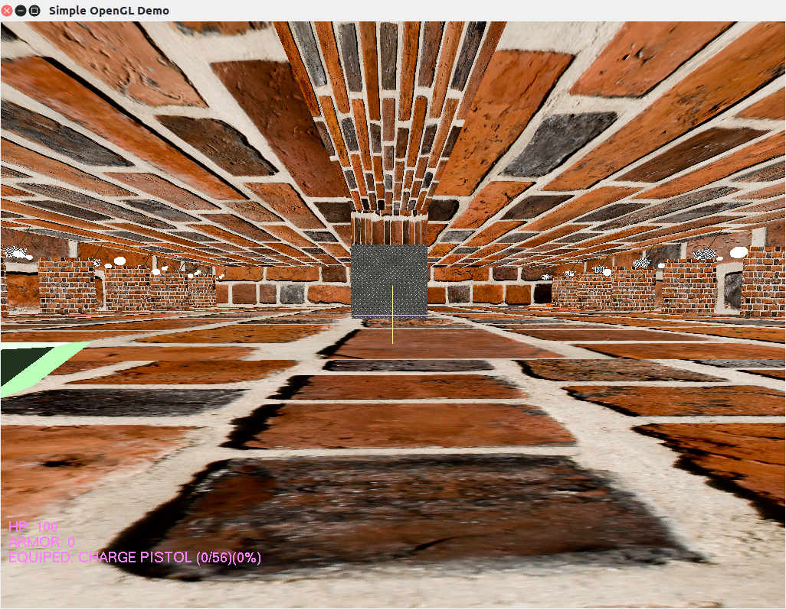
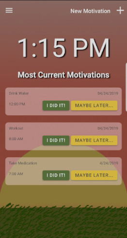
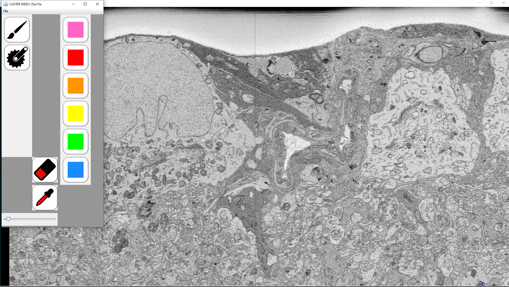

Projects
Take a look at some of the Projects I've worked on during my academic career.

Creating & Modifying a Video Game Engine
Within my Game Engine Design Class, we created a basic Game Engine in C and C++, which allowed for the User to jump infinitely, shoot balls indefinitely, have collision, and basic, mainly stationary AI.
For the Final of that class, I modified the system to be more in-line with what you would expect for a First Person Shooter: Only one jump, Multiple weapons, an Ammo system, more variety of AI, and some fake walls for secret areas.

Motivation with Motivate Me! An App made with Ionic
The "Motivate Me!" App was a collaboration between 3 of my fellow Computer Science students, and was created using Ionic, A development Platform that used HTML, CSS, and Javascript.
Originally, we also would of had a Web Design student assist in the design, however, due to scheduling conflicts, I took over the design. I also acted as a leader in the early phases of the project, Helping my peers get their heads around Javascript, as well as designing the Motivation Class structure. After everyone was more comfortable and my guidance less necessary, I worked on Push Notification Integration.
